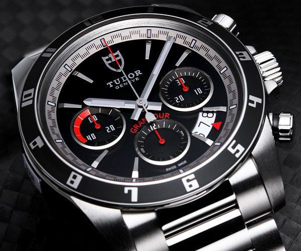

L'Héritage Tudor
🛡️ Origines de la Marque
Tudor a été créée en 1926 par Hans Wilsdorf, le créateur visionnaire derrière Rolex. Avec un positionnement stratégique clair — « Une montre Rolex à prix accessible » — Tudor s'est imposée comme référence de l'horlogerie de luxe abordable, sans compromis sur la qualité.
Chaque montre Tudor incarne l'excellence technique suisse, la précision chronométrique certifiée COSC, et un design intemporel qui défie les modes.
Ancien logo: la Rose historique de la montre Tudor — symbole d'authenticité et d'héritage horloger depuis 1926
⌚ Les collections iconiques
Black Bay : La ligne signature de Tudor, incarnant le design vintage revisité. Disponible en multiples coloris — bordeaux, bleu et noir, parmis d'autres — la Black Bay représente aventure et robustesse.
Pelagos : Montre de plongée haute performance, certifiée pour 500 mètres d'immersion. Symbole de recherche technologique et de capacités extrêmes.
Ranger & Glamour : Collections complémentaires exprimant polyvalence — du quotidien luxe à l'élégance intemporelle.

Collections emblématiques — designs distincts et innovants
🏆 Valeurs Fondamentales
Tudor n'est pas une simple montre — c'est un engagement envers l'excellence :
- Précision : Chronométrage certifié COSC, fiabilité absolue
- Artisanat : Fabrication suisse rigoureuse, contrôle qualité exigeant
- Innovation : Recherche continue en matériaux, mouvements, designs
- Aventure : Montres conçues pour explorateurs, professionnels, passionnés

Mouvement mécanique — artisanat et précision suisse
Conseiller Client Luxe
💎 Différenciation Tudor vs Rolex
Tudor partage l'héritage Wilsdorf et la rigueur suisse avec Rolex, mais s'impose comme alternative stratégique de prestige :
- Accessibilité stratégique : Excellence identique, prix plus accessible
- Design distinctif : Black Bay = identité forte, reconnaissance immédiate
- Innovation technique : Recherche continue, technologies propriétaires
- Public connaisseur : Apprécié des experts, pas « effet de masse »

Collections distinctes — diversité et innovation design
💬 Argumentaire Clés
Points essentiels à retenir :
- Excellence technique identique à Rolex
- COSC certifié (précision chronométrique garantie)
- Fabrication suisse, contrôle qualité exigeant
- Design intemporel, reconnaissable globalement
- Valeur conservée long terme

Environnement de consultation — sophistication et prestige
⚡ Conseil clé :
Ne jamais opposer Tudor et Rolex de manière négative. Les deux marques coexistent harmonieusement. Tudor attire une clientèle moderne, informée, qui valorise l'authenticité et le rapport qualité-prix exceptionnel.
Réponse du consultant expert :
« Excellente question. Tudor et Rolex partagent le même héritage Wilsdorf et la même rigueur suisse. Mais Tudor vous offre l'excellence technique identique avec une accessibilité stratégique. Vous achetez une montre certifiée COSC, fabriquée en Suisse, avec 50+ années de recherche — mais sans la prime de rareté Rolex. Et franchement, le design Tudor Black Bay captive aujourd'hui les connaisseurs autant que les références classiques. C'est l'achat intelligent du passionné. »
✓ Excellent ! Vous maîtrisez le positionnement Tudor vs Rolex. Vous êtes prêt à passer à la validation finale.
Authenticité & Contrôle Qualité
🔍 Critères d'Authenticité
En tant que consultant Tudor, vous devez pouvoir identifier instantanément une montre authentique :
- Logo & Gravures : L'écusson Tudor net, sans bavures. Gravures profondes et régulières.
- Cadran & Marqueurs : Couleurs exactes (Bourgogne, Bleu), marqueurs luminescents uniformes
- Bezel : Rotation lisse et précise, graduations alignées, pas de jeu latéral
- Mouvement : Chronométrage COSC certifié (± 6 secondes/jour). Cas de test disponible en boutique.

Marqueurs nets et alignés — critère d'authenticité clé
✓ DétailCouronne et bezel — détails de vérification qualité
✅ Engagement Garantie
Chaque montre Tudor vendue en boutique agrée offre :
- Garantie 2 ans de fabrication suisse
- Service après-vente 5 ans (révision, réparation)
- Certificat d'authenticité documenté (carte garantie + certificat COSC)
- Pérennité — Valeur Tudor conservée, revente facilitée
🏅 Votre Rôle Fondamental
« Vous n'êtes pas un commercial. Vous êtes un gardien du savoir-faire Tudor. »
En tant que consultant, votre mission dépasse la vente. Vous :
- Éduquez le client sur l'essence d'une montre de luxe suisse
- Protégez la marque Tudor contre les contrefaçons et imitations
- Fidélisez le client en bâtissant confiance et expertise
- Inspirez par votre connaissance du produit et des valeurs Tudor
Réponse du consultant expert :
« Excellente question qui démontre votre vigilance ! Laissez-moi vous montrer les signes distinctifs d'une Tudor authentique : »
Premièrement, observez le cadran — la finition est absolument impeccable, avec des index appliqués et non imprimés. Voyez comment l'aiguille 'snowflake' des heures est parfaitement proportionnée ? C'est une signature Tudor depuis 1969.
Deuxièmement, le mouvement : cette montre intègre un calibre manufacture MT5602 certifié COSC. Regardez au dos — le numéro de série est gravé avec une précision laser, impossible à reproduire pour une contrefaçon.
Enfin, vous recevez un certificat d'authenticité et de garantie internationale de 5 ans, enregistré dans notre système mondial. Vous pouvez à tout moment faire authentifier votre montre dans n'importe quel centre de service agréé Tudor.
Chez nous, chaque Tudor vendue est garantie 100% authentique, et nous assumons pleinement cette responsabilité en tant que détaillant agréé.
✓ Parfait ! Vous avez démontré expertise, pédagogie et réassurance client. Vous êtes prêt à représenter Tudor !